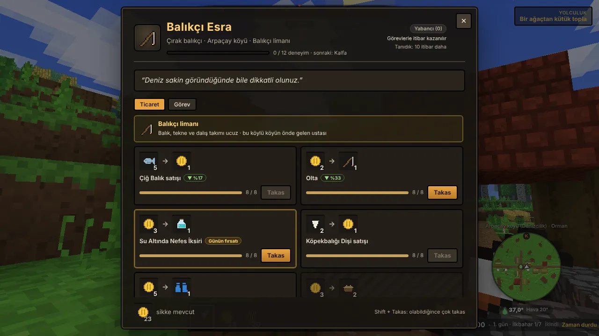
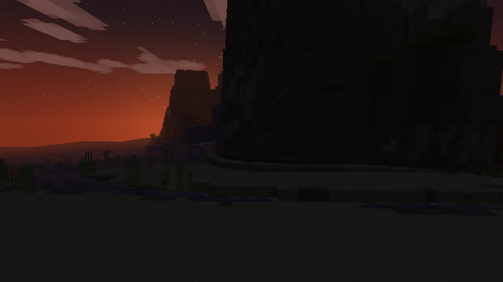
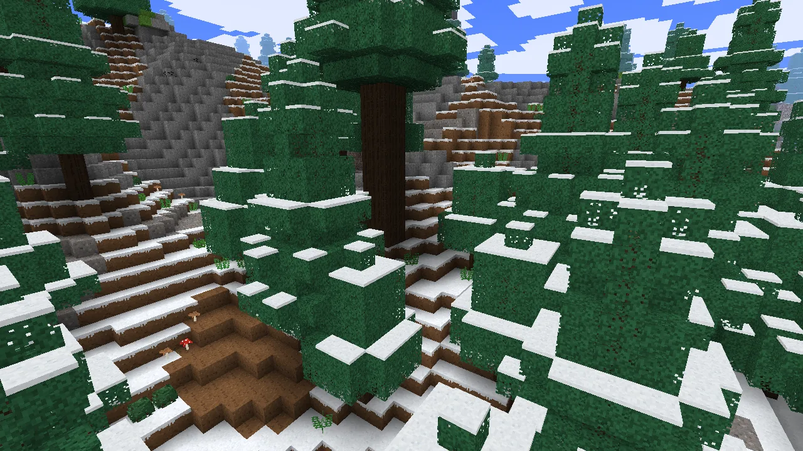
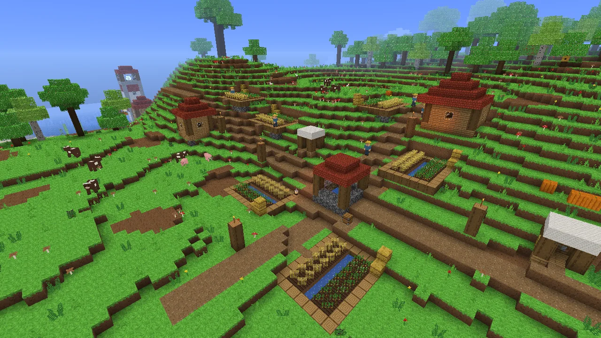
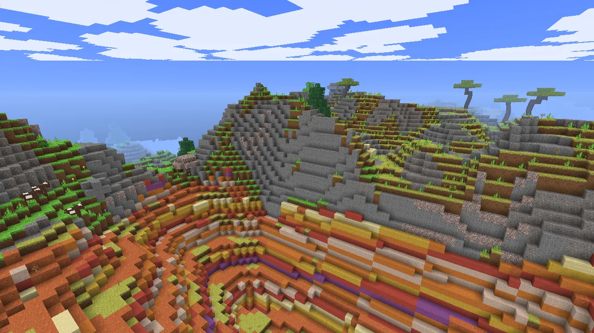
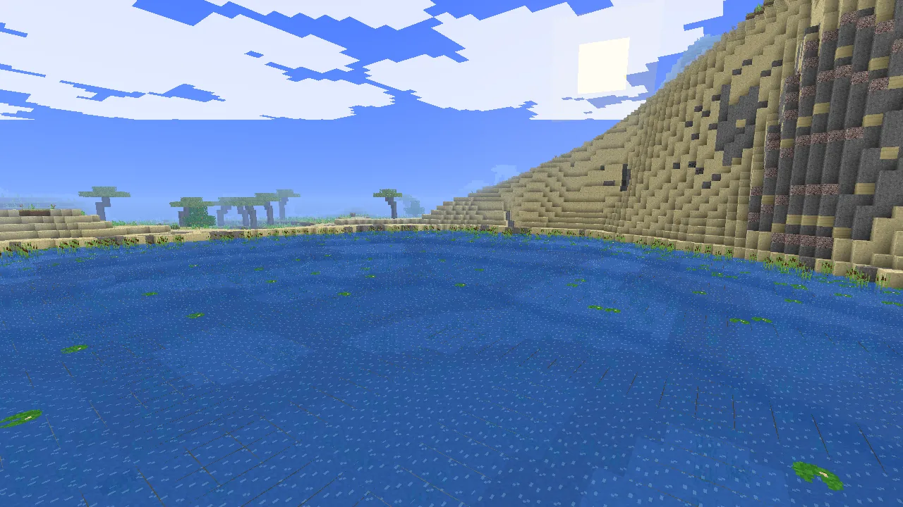
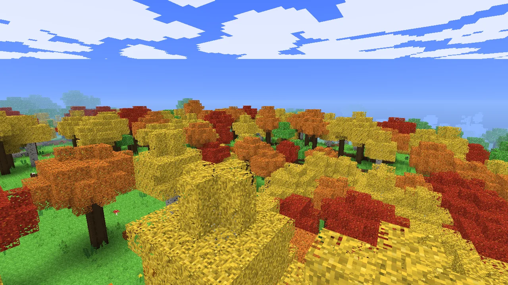
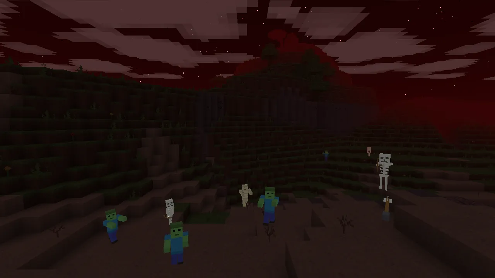
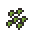
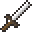

Elinizde hiçbir şey yokken başlarsınız
HungerMan tarayıcıda açılan, bloklardan oluşan bir hayatta kalma oyunu. İndirmeniz, kurmanız ya da hesap açmanız gerekmiyor. Sayfayı açıp yeni bir dünya oluşturuyorsunuz, o kadar.
İlk gün ağaç kesip bir masa yaparsınız. Hava kararmadan bir sığınak bulsanız iyi olur, çünkü geceleri zombiler çıkıyor. Sonra madenler, köyler, uzak adalar, tapınaklardaki bosslar geliyor. Bir noktada kendinizi tarlanızı sulayan fıskiyeye kablo çekerken bulabilirsiniz.
Dünya kaydı tarayıcınızda tutulur. Kaldığınız yerden devam edersiniz.
İlk 24 saatiniz böyle geçer
Kimse size ne yapacağınızı söylemiyor. Ama çoğu oyuncunun ilk günü aşağı yukarı şöyle geçiyor.
Boş ceplerle uyanırsınız
Ne kazma var ne ekmek. Etrafta ağaçlar, uzakta bir tavuk. İlk iş en yakın ağaca gidip kütük toplamak. Beş kütük, birkaç kalas, bir masa: medeniyet böyle başlıyor.

Beş yüzü aşkın tarif, tek bir masa
Üretim penceresi elinizdekilerle neler yapabileceğinizi tek tek gösterir. Eksik malzemenin nereden çıktığını bile yazar. Tahta kazma, ardından taş kazma; bir saat önce çıplak elle ağaç kesen siz değilmişsiniz gibi.
Üret düğmesine Shift ile basarsanız malzeme yettiği kadar üretir.

Tepenin ardında duman tüten bacalar
Balıkçı Esra oltasını iki sikkeye veriyor, demirci kılıçtan anlıyor, çoban yün satıyor. Köylülere iyilik ettikçe fiyatlar düşer, yeni mallar açılır. Söylentilerini dinlerseniz haritanızda soru işaretleri belirmeye başlar.

Güzel manzara, kötü haber
Gökyüzü kızarıyor ve sığınağınız hâlâ yok. Kapısı olan dört duvar, birkaç meşale, mümkünse bir yatak. Toprak kulübe de olur; kimse mimari ödül vermeyecek.

Işığın bittiği yerde güvenli alan da biter
Zombiler karanlıkta doğar, iskeletler uzaktan ok atar. Ayak seslerini önce kulağınız duyar, sonra gözünüz görür. Duvara sırtınızı verin, meşaleyi elinizden bırakmayın.
Kapalı bir kapının arkasından size vuramazlar. Çoğu zaman.

Asıl hikâye sabah başlar
Derin madenler, batık gemiler, çöl tapınağında uyanmayı bekleyen Firavun, gökyüzünün kana bulandığı geceler ve en sonda Lanetli Ada'daki Kül Devi. Ne kadar ileri gideceğiniz size kalmış.
Kısaca anlatmak zor, ama deneyelim
Her sürümde üstüne bir şeyler ekleniyor. Bunlar sadece başlıcaları.
Her seferinde yeni bir kıta
Sivri dağlar, kanyonlar, nehirler, göller ve 25 biyom. Aynı tohumu yazan herkes aynı dünyayı görür.
Açlık ve soğuk
Yemek bulmanız lazım. Vücut ısınız da önemli: karlı dağda gece üşür, çölde öğlen bunalırsınız.
Yaşayan köyler
Köylülerle takas yapın, görev alın. İtibarınız arttıkça fiyatlar düşer, yeni mallar açılır.
Tapınaklar ve bosslar
Firavun, Buz Büyücüsü, Haydut Reisi, Taş Muhafız. En sonda Lanetli Ada'da sizi bekleyen Kül Devi.
Elektrik
Güneş paneli, rüzgâr türbini, bataryalar, lambalar, otomatik taret. Kabloları siz çekersiniz.
Tarım ve mutfak
Domatesten karpuza onlarca ekin, meyve ağaçları. Unu öğütüp pide de yapabilirsiniz.
Mevsimler
28 günlük bir yıl. Sonbaharda yapraklar kızarır, kışın göller donar, ekinlerin çoğu büyümez.
Arkadaşlarla
Dünyanızı bir kodla açın, 8 kişiye kadar birlikte oynayın. Ayrı bir sunucu gerekmiyor.
On iki saniyede HungerMan
Kumsalda gün batımı, sabah ormanı ve bir köy. Oyunun içinden, göstergeler kapalı çekildi.
Oyundan birkaç kare
Hepsi oyunun içinden alındı. Büyütmek için üstüne tıklayın.









İlk dakikalar

Dünyanızı kurun
Ana menüde Dünyalar > Yeni Dünya. Tohumu boş bırakırsanız rastgele seçilir. Zorluğu sonradan değiştiremezsiniz, ona göre seçin.

Ağaca vurun
Sol tıkı basılı tutup kütük toplayın. Q ile envanteri açıp kalas, çubuk ve Üretim Masası yapın.
Geceye hazırlanın
Bir gün 20 dakika sürüyor ve bunun yarısı gece. Karanlık çökmeden meşale yakın, kapısı olan bir yere girin.

Gerisi sizde
Takıldığınız yerde rehbere bakabilirsiniz. Her şeyi anlatmıyor ama işinizi görür.
Sorular
Ücretli mi?
Hayır. Reklam da yok, hesap da yok.
Bir hata buldum, nereye yazayım?
Oyunda Esc ile duraklatıp Sorun Bildir'e basın; rapor kendiliğinden hazırlanıyor. Ne yaparken olduğunu ve mümkünse F3 ile gördüğünüz konumu da yazarsanız bulmamız çok kolaylaşır. Bilinen sorunların listesi güncellemeler sayfasında.
Oyun kumandasıyla oynanır mı?
Evet. Kumandayı takıp bir tuşuna basın, gerisi kendiliğinden geçer. Menülerde ekranda bir imleç belirir, sol çubukla sürüp A ile tıklarsınız. Tuşların listesi rehberin Kontroller bölümünde.
Hangi tarayıcıda çalışır?
Güncel Chrome, Edge, Firefox ve Safari'de çalışıyor. WebGL2 desteği gerekli. Klavye ve fareyle oynamak en rahatı ama telefon ve tablet için dokunmatik kontroller de var.
Kayıtlarım nerede duruyor?
Tarayıcınızın kendi deposunda. Bizim tarafımıza bir şey gelmiyor. Tarayıcı verilerini temizlerseniz dünyalar da silinir, o yüzden önemli dünyalarınızı Dünyalar ekranından yedekleyin.
Oyun takılıyor, ne yapabilirim?
Ayarlar > Görüntü bölümünden görüş mesafesini düşürün, ilk fark orada hissedilir. Grafik ön ayarını bir kademe indirmek ve çözünürlüğü Otomatik'te bırakmak da işe yarar. Dizüstü bilgisayarda tarayıcının harici ekran kartını kullandığından emin olun.
Arkadaşlarımla nasıl oynarım?
Biriniz dünyasını açar, duraklatma menüsünden "Dünyayı Arkadaşlara Aç" der. Çıkan 6 karakterlik kodu diğerleri Çok Oyunculu ekranına yazar. Ayrıntısı rehberde.
Eski dünyam yeni sürümde bozulur mu?
Bozulmaz. 0.41 ile dünya üreticisi baştan yazıldı ama eski dünyalar eski üreticiyle açılmaya devam ediyor. Yeni araziyi görmek için yeni bir dünya oluşturmanız yeterli.
Kulaklıkla oynamak gerekir mi?
Gerekmez ama tavsiye ederiz. Sesler nereden geliyorsa oradan duyulur; bir zombinin hangi yönden geldiğini çoğu zaman görmeden anlarsınız. Duymakta zorlananlar Ayarlar > Ses bölümünden ses altyazılarını açabilir.
Tohumunuz hazır mı?
Yükleme birkaç saniye sürer. Sesi açın; gece olunca nedenini anlayacaksınız.
▶ Oyunu Başlat